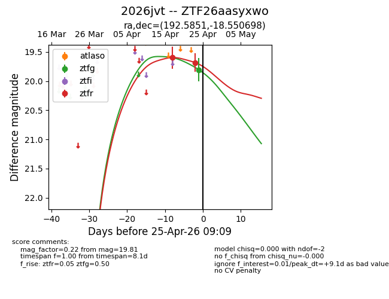
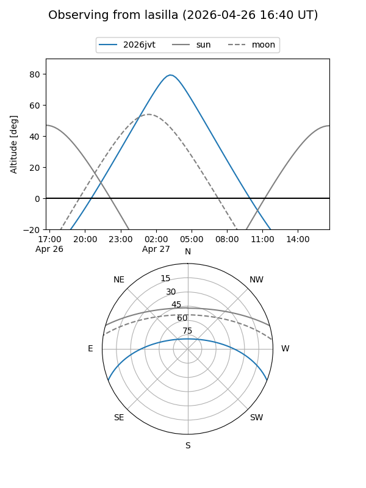
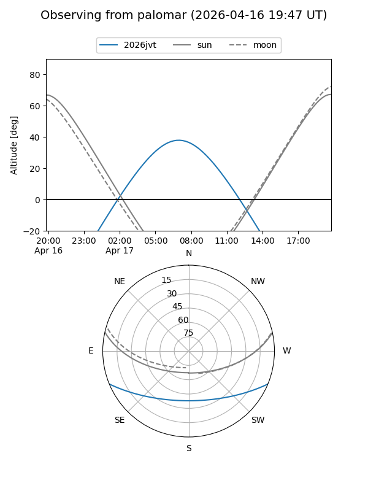
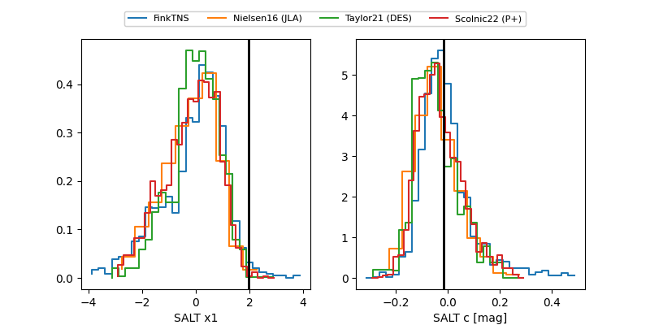

2026jvt
Target 2026jvt at 2026-04-25 09:10
Aliases and brokers:
FINK: link
Lasair: link
ALeRCE: link
TNS: link
YSE: link
alt names
ZTF26aasyxwo (ztf,fink_ztf)
2026jvt (tns,yse)
Coordinates:
equatorial (ra, dec) = 192.5851,-18.55070
equatorial (HMS+DMS) = 12:50:20.43,-18:33:02.51
galactic (l, b) = (302.5684,+44.32027)
Flags:
Photometry:
last ztfg=19.81, ztfr=19.68
1 ztfg, 2 ztfr detections
Lightcurve

Visibility


Additional plots
